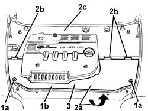

7025A12 Engine front sound insulation COVER - R.R.
- Path
- Procedures > 70 FITTINGS > 7025 COMPARTMENT LIDS > 7025A bonnet lid > 7025A12 Engine front sound insulation COVER - R.R.
- Kind
- repair procedure (removal / refitting; the operation number is the code)
- Applies to
- engines: 1.9 JTD 16v; all production periods
- Interactive page
- https://sloeber94.github.io/elrnDB-a156/en/#/3238721
Applies to: engines: 1.9 JTD 16v; all production periods
Open the bonnet lid.
1. Using a coin, rotate the front cover (1b) retainers (1a) until they are released.
2. Lift up the front section of the cover (2a) until the retainers (2b) are released from the rear cover (2c).
3. Remove the engine compartment front cover.

Applies to: engines: 1.9 JTD 16v; all production periods
Check that the front cover is not damaged.
Fit the front cover in place engaging the retainers with the rear cover.
Using a coin, secure the front cover rotating the retainers until they are engaged.
Reclose the bonnet lid.
Topics that link to this page (21)
- 5040A40 air conditioner condenser - r+r
- 5040A60 pipe from condenser to evaporator (expansion pipe) - r+r
- 5040A73 compressor inlet pipe - r r
- 5040A76 tandem pipe for delivery and return from evaporator rr
- 5050A10 windscreen washer fluid reservoir (in engine bay) - r+r
- 5050B20 windscreen washer electrical pump - r+r
- 5050D20 headlamp washer pump - r+r
- 5540B22 l/h or r/h headlamp/light cluster bulb (one) - r+r
- 5540B26 bulb (one) for side lights of one headlamp/light cluster, l/h or r/h - r+r
- 5540B38 headlamp/light cluster light beam - position
- 5540B44 dipped beam for one gas discharge lighting unit one lh or rh r r
- 5540B46 lampada one main beam or turn signal lh or rh of one gas discharge lighting unit r r
- 5540B47 BULB (one) for MAIN BEAM in gas discharge LIGHT CLUSTER (one), left or right - R.R.
- 5540C24 motor (one) for l/h or r/h headlamp/light cluster alignment correction - r+r
- 5550B30 l/h or r/h horn (one) - r+r
- 5550C18 bulb of one front turn signal, l/h or r/h - r+r
- 7025A10 bonnet lid - square
- 7025A14 Bonnet LID - R.R.
- 7025A18 l/h or r/h bonnet lid hinge (one) - r+r with lid removed
- 7025A26 bonnet lid opening control - repair
- 7040D10 engine bay lh or rh side cover(one) - r r